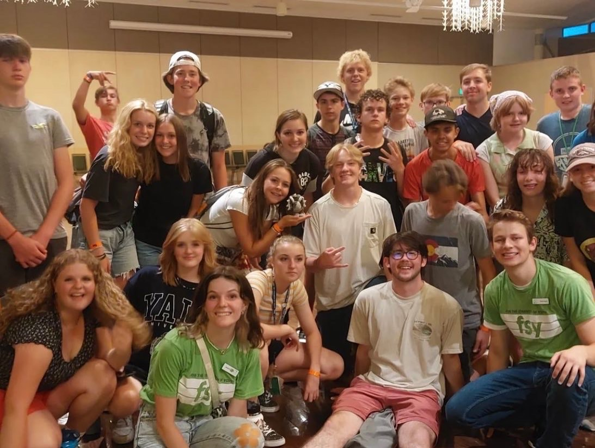

It is Important to note the power tourism has in building the economies of countries.
See this interactive data sheet to better understand how tourism impacts the world:
How Tourism Helps a Country's Economy
Revenue Generation
Tourism brings in foreign exchange through spending by international tourists on accommodation, transportation, food, souvenirs, and other goods and services. This influx of foreign currency boosts the country's revenue and can contribute significantly to its GDP.
Job Creation
The tourism industry generates employment opportunities across various sectors such as hospitality, transportation, entertainment, and retail. From hotel staff and tour guides to artisans and taxi drivers, tourism creates a diverse range of jobs, thereby reducing unemployment rates and improving living standards.
Infrastructure Development
To accommodate tourists, countries often invest in infrastructure development projects such as airports, roads, hotels, restaurants, and recreational facilities. These developments not only enhance the overall tourism experience but also contribute to the country's long-term economic growth and competitiveness.
Stimulating Other Industries
The demand generated by tourism has a multiplier effect on other sectors of the economy. For example, increased tourism may lead to higher demand for agricultural products, handicrafts, cultural performances, and transportation services, benefiting local producers and businesses.
Cultural Exchange and Diplomacy
Tourism fosters cultural exchange and understanding between nations, promoting peace and cooperation. By showcasing their heritage, traditions, and natural attractions, countries can attract visitors and build positive perceptions, ultimately strengthening diplomatic ties and international relations.
Below are my credentials and experience with international finance
Brigham Young University – Marriott School of Management
Provo, UT
Bachelor of Science in Finance, Apr 2026
GPA 3.91 / 4.00
Completed key courses in finance, accounting, economics, Excel, and information systems
Studied and achieved a perfect score on accounting final based on GAAP and financial statement analysis
EXPERIENCE
RevRoad
Provo, UT
Team Intern, Jan 2024 – Apr 2024
Teamed in campus internship developing course material and cost evaluations for new series of conferences to help new companies receive multimillion-dollar financing
Interpreted data from and contacted the biggest investing firms in the United States for entrepreneur financing parameters
Evaluated cost and price of overall project and developed key marketing drivers
Brigham Young University
Provo, UT
Interior Design Project Intern, Apr 2023 – Present
Consulted with lead interior designers by meeting with clients, evaluating costs of projects, and completing financial forms
Executed work orders with budgets up to $200K
Set in a professional corporate setting requiring constant communication with several teams throughout BYU
Gelu Italian Ice
San Marcos, CA
Food Truck Manager, May 2022 – Aug 2022
Operated an Italian ice truck at San Diego County events
Coordinated with 20+ event directors and expanded truck locations to all of San Diego County
Supervised transactions of $1000+ and received $100+ tips per venue
Brigham Young University
Provo, UT
FSY Counselor, May 2022 – Aug 2022
Traveled to 5 locations across the United States mentoring groups of 10-30 teenagers in weekly sessions
Organized events and activities teaching principles of leadership, discipline, and accountability
Coordinated with co-counselor to address disciplinary issues and model appropriate behavior
Photo of me at FSY

Legoland California
Carlsbad, CA
Education Associate, Mar 2018 – Feb 2020
Coordinated national and worldwide competitions
Managed guest services and maintained a safe, enjoyable environment for park visitors
Taught Lego robotic classes to groups of 20+
VOLUNTEER SERVICE
The Church of Jesus Christ of Latter-day Saints
Sao Paulo, Brazil
Volunteer Representative and Office Managers, Mar 2020 – Apr 2022
Exhibited administrative and language skills as an Executive Secretary to mission president by managing missionaries, office secretaries, conferences, government documentation, and office finances
Headed visa process of 50+ missionaries from Africa, Mexico, and The United States into Brazil developing professionalism and accuracy
Developed a strong work ethic by seeking and teaching religious principles to individuals in Utah and Brazil every day for two years in a new language
This is Sao Paulo, Brazil
SKILLS & INTERESTS
Eagle Scout, Boy Scouts of America; Budgeted, organized donations, and created clothing for the Mormon Battalion Parade
4 Years of personal stock evaluation and investment experience with between 110–135% total return
Interests: Hiking, Art, Programming, Music, and Martial Arts